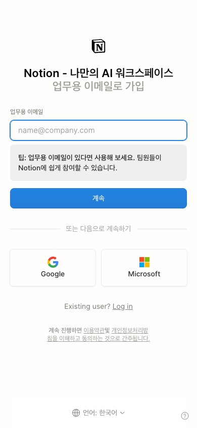
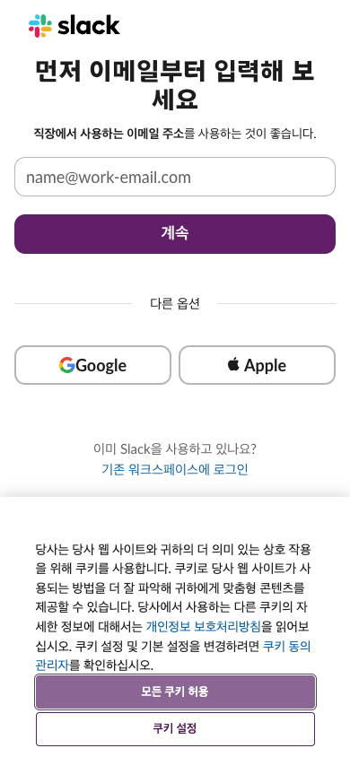
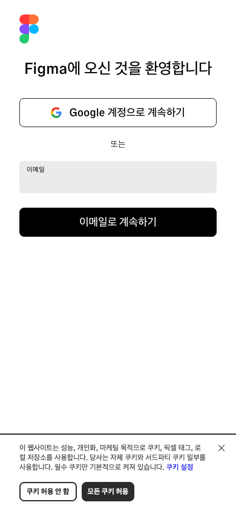
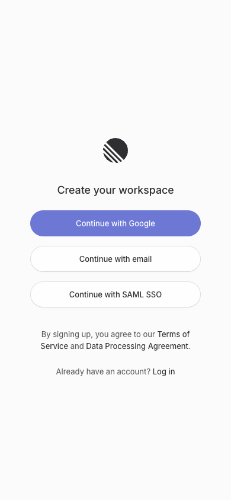
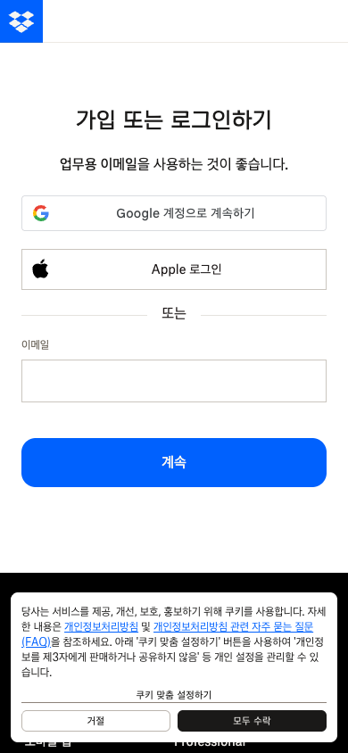
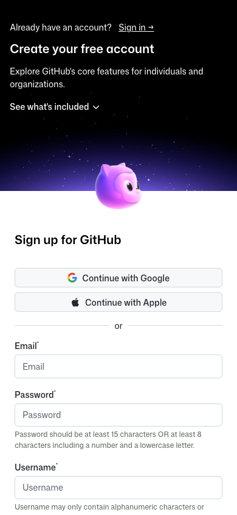
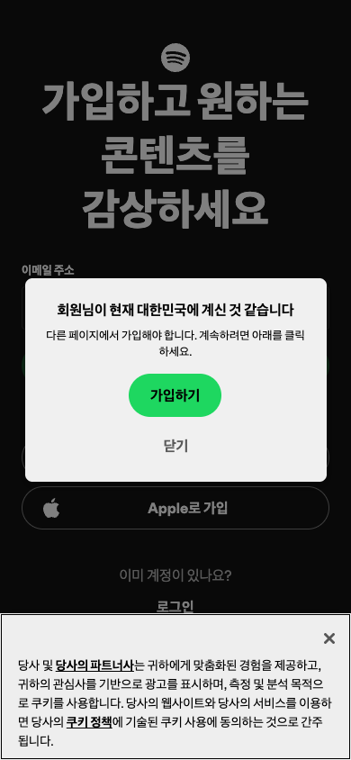

Design Research: Email-First Mobile App Signup
TL;DR
이메일 중심 회원가입은 첫 화면에서 이메일 하나만 입력하면 다음 단계로 갈 수 있다는 감각을 줘야 합니다. 모바일에서는 magic link만 단독으로 쓰기보다 이메일 코드 입력을 기본으로 두고, magic link는 보조 수단으로 제공하는 쪽이 더 견고합니다.
Lazyweb MCP note: 현재 세션에서 lazyweb_health/lazyweb_search 도구가 노출되지 않았고 browse helper도 NO_BROWSE였습니다. 따라서 이 리포트의 시각 자료는 Lazyweb DB가 아니라 Playwright로 직접 캡처한 모바일 웹 사례입니다.
Recommendations / Next Steps
1. 첫 화면은 이메일 1필드 + 명확한 CTA로 시작
Notion, Slack, Figma, Dropbox 모두 모바일 폭에서 이메일 필드를 매우 일찍 보여줍니다. 제품이 이메일 위주라면 Google/Apple은 보조 선택지로 두되, 이메일 입력과 CTA가 주인공이어야 합니다.
┌─────────────────────────────┐ │ Brand │ │ │ │ 이메일로 시작하세요 │ │ 계정 생성과 로그인을 │ │ 한 번에 처리합니다 │ │ │ │ 이메일 │ │ ┌───────────────────────┐ │ │ │ name@example.com │ │ │ └───────────────────────┘ │ │ [ 계속 ] │ │ │ │ ───── 다른 방법 ───── │ │ [ Apple ] [ Google ] │ │ 이미 계정이 있나요? 로그인 │ └─────────────────────────────┘
2. 검증 단계는 코드 입력을 기본, magic link를 보조로 설계
MDN은 이메일 OTP에서 링크 방식이 편하지만 같은 기기/브라우저 요구와 피싱 위험이 있고, 코드 방식은 더 느리지만 다른 기기에서도 유연하다고 설명합니다. 모바일 앱에서는 6자리 코드 입력과 메일 안의 링크를 같이 보내는 방식이 안전합니다.
┌─────────────────────────────┐ │ 이메일을 확인하세요 │ │ research@example.com으로 │ │ 6자리 코드를 보냈습니다 │ │ │ │ ┌──┐ ┌──┐ ┌──┐ ┌──┐ ┌──┐ ┌──┐ │ │ │ │ │ │ │ │ │ │ │ │ │ │ │ │ └──┘ └──┘ └──┘ └──┘ └──┘ └──┘ │ │ │ │ [ 확인 ] │ │ 00:43 후 다시 보내기 │ │ 이메일 변경 │ │ │ │ 메일의 로그인 링크로도 │ │ 계속할 수 있습니다 │ └─────────────────────────────┘
3. 이메일 검증 전에는 계정 세부 정보를 묻지 않기
GitHub처럼 이메일, 비밀번호, 사용자명을 한 화면에서 받는 구조는 보안/개발자 계정 맥락에는 맞지만 일반 모바일 앱의 첫 가입에는 무겁습니다. 이름, 닉네임, 마케팅 동의, 프로필은 성공 화면 다음에 progressive disclosure로 받는 것이 좋습니다.
┌─────────────────────────────┐ │ 가입 완료 │ │ │ │ 이제 시작할 수 있어요 │ │ │ │ 표시 이름 │ │ ┌───────────────────────┐ │ │ │ │ │ │ └───────────────────────┘ │ │ │ │ [ 완료 ] │ │ 나중에 하기 │ └─────────────────────────────┘
4. 에러는 기술 상태가 아니라 사용자의 다음 행동으로 표현
각 상태는 invalid email, unsupported domain, already used, expired, rate limited, email delayed로 나누고, 반드시 다음 버튼을 제공합니다.
5. 보안 규칙은 UI 문구와 함께 정해야 함
짧은 만료 시간, one-time use, 재전송 제한, 만료/사용됨 상태의 명확한 처리가 UI의 신뢰감을 결정합니다.
Key Examples







Patterns
- Email-first does not mean email-only. 좋은 화면은 이메일을 주 경로로 두되 Apple/Google/SSO를 보조로 제공합니다.
- Benefit copy is short. Notion과 Slack은 업무용 이메일 맥락을 짧게 말하고 바로 입력으로 보냅니다.
- Visible labels beat placeholder-only forms. Text field는 label, state, assistive text로 입력 상태를 명확히 해야 합니다.
- The login link remains visible. 이미 계정이 있는 사용자가 회원가입 폼을 역주행하지 않도록 Log in을 같은 화면에 둡니다.
- Security state is part of UX. 만료, 재전송, 이미 사용된 링크, 다른 기기에서 열린 링크는 별도 화면/문구로 설계되어야 합니다.
Anti-Patterns
- Magic link only.
- Too many required fields before verification.
- Policy layers over the primary CTA.
- Raw technical error states.
- Hidden resend rules.
Unique Angles
- Work-email framing: B2B/관리자 앱이라면 조직 이메일이 왜 좋은지 한 줄로 설명합니다.
- SAML SSO early reveal: 엔터프라이즈 사용자는 이메일 입력 후 실패하는 것보다 SSO 가능성을 먼저 보는 편이 낫습니다.
- Email as account discovery: 이메일 하나로 신규/기존 사용자를 자동 분기합니다.
- Link + code hybrid: 이메일에는 magic link와 6자리 코드를 함께 넣고, 앱에는 코드 입력을 기본으로 둡니다.
Findings
권장 플로우는 Email entry -> Check email code -> Success -> Optional profile completion입니다. 첫 화면에서는 계정 생성과 로그인을 구분하지 말고, 이메일 제출 후 서버가 사용자를 분기합니다.
보안 관점에서는 이메일 OTP/magic link 모두 이메일 계정 접근권을 신뢰합니다. 따라서 계정 위험도가 높은 제품은 passkey, TOTP, device confirmation 같은 추가 인증을 검토해야 합니다.
Sources
- MDN: One-time passwords (OTP)
- Material Design: Text fields
- Baymard: Account Selection Design Examples
- AppMaster: Passwordless login with magic links
- LogRocket: How to use magic links for better UX
- Apple HIG: Sign in with Apple
- Captured examples: Figma, Notion, Linear, GitHub, Dropbox, Slack, Spotify.